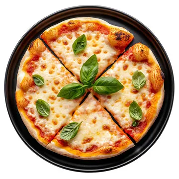

Pizza Recipe

Description
An Italian dish consisting of a usually round, flattened bread dough base
topped with tomato sauce, cheese, and various other toppings, which is
then baked at a high temperature. For a simple home version, you can use
store-bought dough or a simple flatbread for the base.
Ingredients
- 1 store-bought pizza dough or pre-made crust
- 1/2 to 1 cup pizza sauce or tomato puree
- 1 to 1.5 cups shredded mozzarella cheese
-
1/2 to 1 cup total toppings (e.g., pepperoni, mushrooms, bell peppers)
- 1 Tbsp olive oil (optional, for brushing crust)
Steps
-
Preheat Oven:
Preheat your oven to a high temperature, typically 450°F (230°C) or as
high as your oven goes, for at least 20-30 minutes. If you have a pizza
stone, place it in the oven while it preheats.
- Prep Dough/Base:
- If using dough: On a lightly floured surface, stretch or roll the dough into your desired shape (10-12 inches round is typical). Transfer to a lightly oiled or cornmeal-dusted baking sheet or pizza peel. Brush the edges with olive oil.
- If using pre-made base: Place the base on a baking sheet.
- Add Toppings: Spread the pizza sauce evenly over the dough/base, leaving a small border for the crust. Sprinkle the mozzarella cheese, and then scatter your chosen toppings. Tip: Don't overload with toppings to avoid a soggy crust.
- Bake: Carefully transfer the pizza to the oven (onto the hot stone or on the baking sheet). Bake for 10 to 15 minutes, or until the crust is golden brown and the cheese is melted and bubbly.
- Serve: Slice and serve hot.
Home